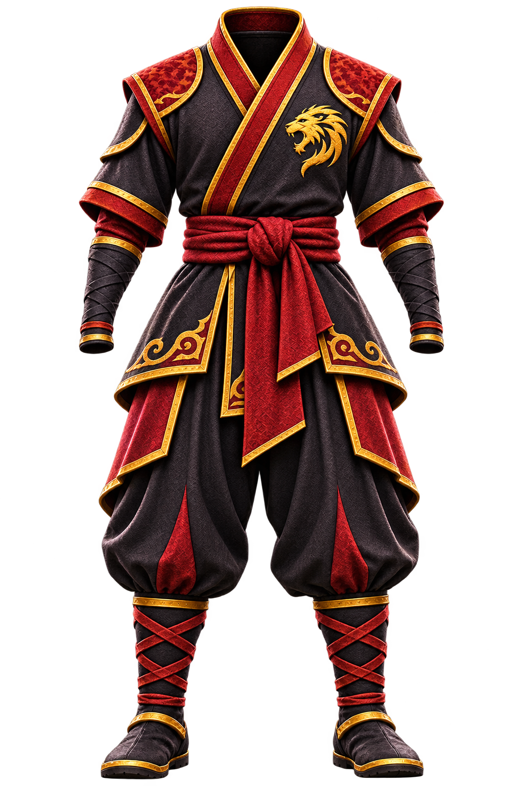
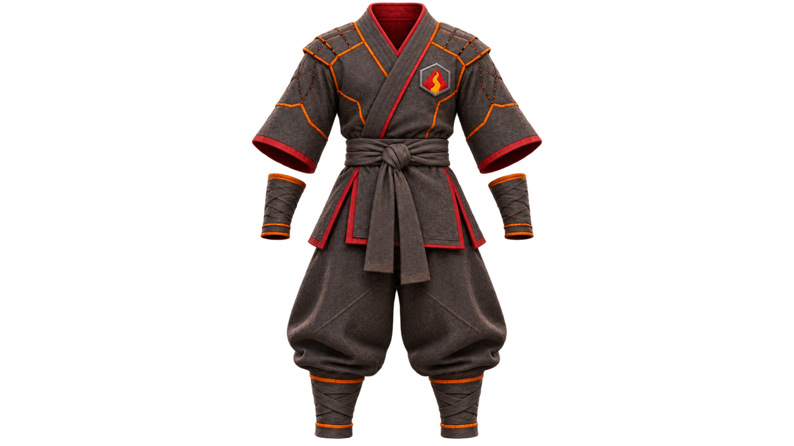
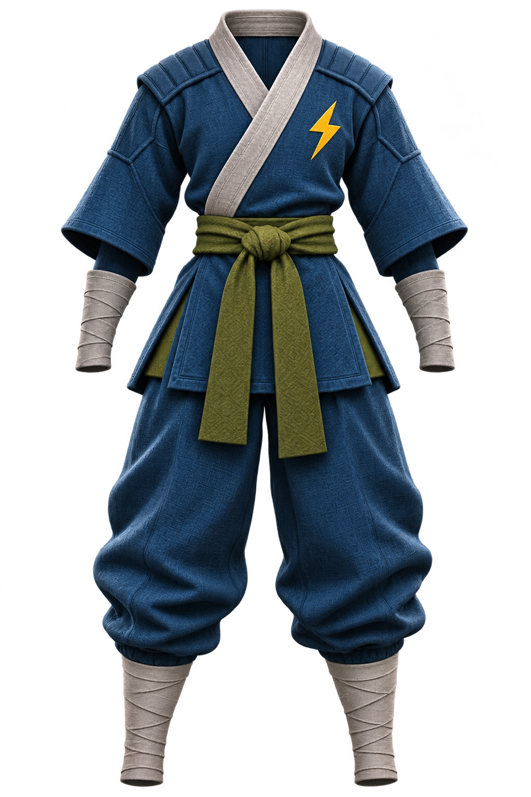
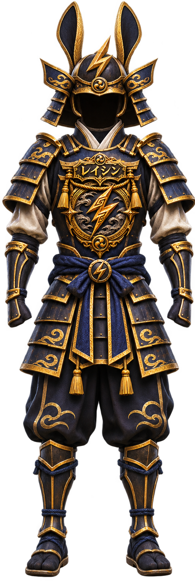
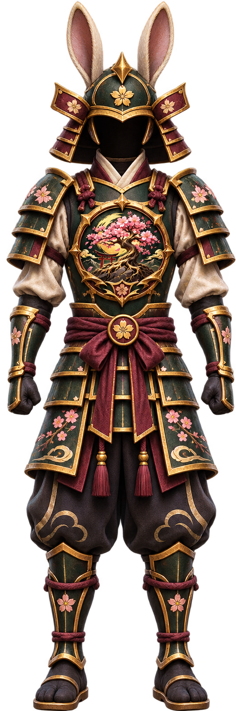

Armor artwork awaiting upload.
Lion Kingdom · Armor
Tactical Armor
Dark plated armor, gold lion motifs and crimson attire. A full wearable set, without weapons or extra equipment.
Discover the armor, attire, weapons and treasured objects of Raika's world. Explore the craftsmanship and symbols that distinguish its kingdoms and warriors.
Dark plated armor, gold lion motifs and crimson attire. A full wearable set, without weapons or extra equipment.

Official training attire of the Royal Dojo: black and crimson fabric, gold embroidery and the lion emblem without the royal conquest crest.

Basalt-gray patterned gi with orange lava-like seams, red edging and the hexagonal flame emblem on the left chest.

Deep-blue patterned gi, pale-gray collar and wraps, olive sash and a golden lightning emblem on the left chest.

The armor of Rai’s elite unit: midnight-blue plates, antique gold trim, and the full Inuziama crest across the chest.

Forest-green armor with burgundy cords, golden edges and the village’s cherry-blossom crest.